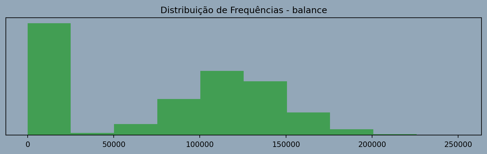
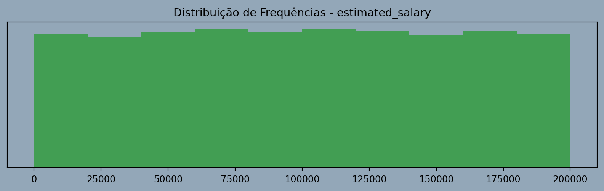
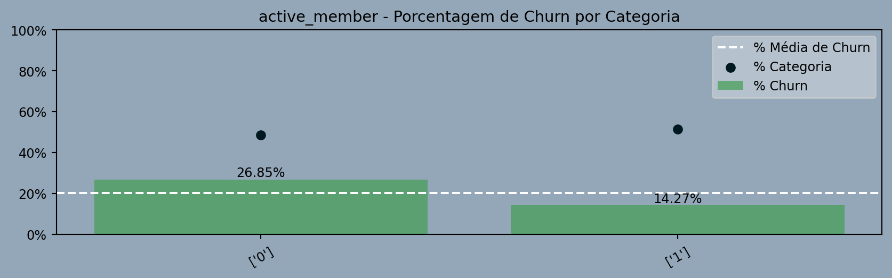
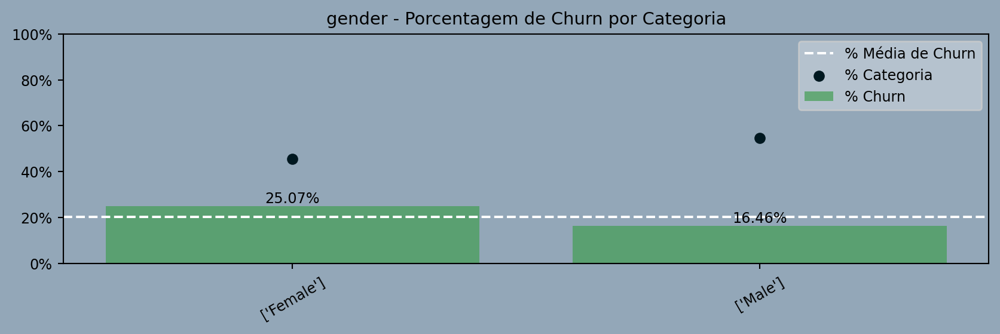
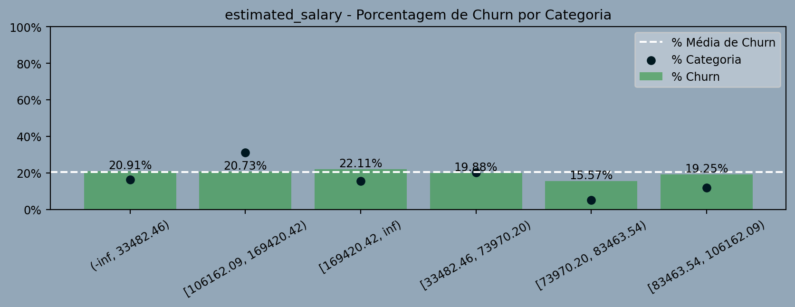
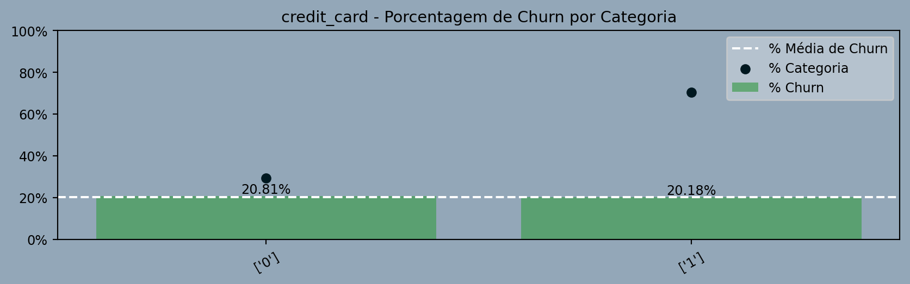

create_table_categorical("churn", df)| Class | Abs. Freq. | Acc. Abs. Freq. | Rel. Freq. | Acc. Rel. Freq. | |
|---|---|---|---|---|---|
| 0 | 7963 | 7963 | 0.80 | 0.80 | |
| 1 | 2037 | 10000 | 0.20 | 1.00 |
O problema de churn, ou rotatividade de clientes, representa um desafio significativo para instituições bancárias. Refere-se à taxa na qual os clientes encerram seus relacionamentos com o banco, migrando para outras instituições financeiras ou até mesmo abandonando serviços financeiros. Este fenômeno pode ser impulsionado por diversos fatores, como insatisfação com serviços, concorrência acirrada, mudanças nas condições econômicas e até mesmo avanços tecnológicos.
Dessa forma, a retenção de clientes torna-se uma prioridade estratégica para os bancos, que buscam constantemente inovar, oferecer experiências mais atrativas e personalizadas, a fim de mitigar o churn e manter uma base sólida de clientes leais.
Diante desse cenário, torna-se de extrema valia a capacidade de identificar os clientes mais propensos ao churn, possibilitando que a instituição financeira aja de maneira antecipada, oferecendo planos e serviços atrativos que impeçam a fuga do cliente.
Temos uma base de dados do ABC Multistate Bank, a qual está hospedada em https://www.kaggle.com/datasets/gauravtopre/bank-customer-churn-dataset/data. Essa base de dados contém informações anonimizadas de 10.000 clientes, onde o problema de negócio em questão resume-se a construirmos um modelo capaz de predizer a ocorrência ou não de churn para um dado cliente, com base nas informações disponíveis.
O objetivo desta etapa é investigar e entender os dados disponíveis, a fim de extrair informações preliminares, identificar padrões, tendências, anomalias e insights relevantes.
Verificaremos que, ao término dessa análise, todas as variáveis apresentam comportamento adequado para prosseguirem no estudo, pois:
Essa variável denota a ocorrência ou não do evento de churn.
create_table_categorical("churn", df)| Class | Abs. Freq. | Acc. Abs. Freq. | Rel. Freq. | Acc. Rel. Freq. | |
|---|---|---|---|---|---|
| 0 | 7963 | 7963 | 0.80 | 0.80 | |
| 1 | 2037 | 10000 | 0.20 | 1.00 |
create_graph_categorical("churn", df)País do cliente.
Avaliação: OK.create_table_categorical("country", df)| Class | Abs. Freq. | Acc. Abs. Freq. | Rel. Freq. | Acc. Rel. Freq. | |
|---|---|---|---|---|---|
| France | 5014 | 5014 | 0.50 | 0.50 | |
| Germany | 2509 | 7523 | 0.25 | 0.75 | |
| Spain | 2477 | 10000 | 0.25 | 1.00 |
create_graph_categorical("country", df)Gênero do cliente.
Avaliação: OK.create_table_categorical("gender", df)| Class | Abs. Freq. | Acc. Abs. Freq. | Rel. Freq. | Acc. Rel. Freq. | |
|---|---|---|---|---|---|
| Female | 4543 | 4543 | 0.45 | 0.45 | |
| Male | 5457 | 10000 | 0.55 | 1.00 |
create_graph_categorical("gender", df)Se o cliente utiliza cartão de crédito.
create_table_categorical("credit_card", df)| Class | Abs. Freq. | Acc. Abs. Freq. | Rel. Freq. | Acc. Rel. Freq. | |
|---|---|---|---|---|---|
| 0 | 2945 | 2945 | 0.29 | 0.29 | |
| 1 | 7055 | 10000 | 0.71 | 1.00 |
create_graph_categorical("credit_card", df)Denota se um cliente está envolvido e participando ativamente das atividades e serviços oferecidos pelo banco.
create_table_categorical("active_member", df)| Class | Abs. Freq. | Acc. Abs. Freq. | Rel. Freq. | Acc. Rel. Freq. | |
|---|---|---|---|---|---|
| 0 | 4849 | 4849 | 0.48 | 0.48 | |
| 1 | 5151 | 10000 | 0.52 | 1.00 |
create_graph_categorical("active_member", df)Número de produtos adiquiridos pelo cliente.
Avaliação: OK.create_table_categorical("products_number", df, ['1', '2', '3', '>=4'])| Class | Abs. Freq. | Acc. Abs. Freq. | Rel. Freq. | Acc. Rel. Freq. | |
|---|---|---|---|---|---|
| 1 | 5084 | 5084 | 0.51 | 0.51 | |
| 2 | 4590 | 9674 | 0.46 | 0.97 | |
| 3 | 266 | 9940 | 0.03 | 0.99 | |
| >=4 | 60 | 10000 | 0.01 | 1.00 |
create_graph_categorical("products_number", df, ['1', '2', '3', '>=4'])Mensura a quantidade de anos decorridos desde que o cliente aderiu aos serviços prestados pelo banco.
Avaliação: OK.#fazer a mesma ordenção de baixo aqui
create_table_categorical("tenure", df, ['[0, 2]', '(2, 4]', '(4, 6]', '(6, 8]', '(8, 10]'])| Class | Abs. Freq. | Acc. Abs. Freq. | Rel. Freq. | Acc. Rel. Freq. | |
|---|---|---|---|---|---|
| [0, 2] | 2496 | 2496 | 0.25 | 0.25 | |
| (2, 4] | 1998 | 4494 | 0.20 | 0.45 | |
| (4, 6] | 1979 | 6473 | 0.20 | 0.65 | |
| (6, 8] | 2053 | 8526 | 0.21 | 0.85 | |
| (8, 10] | 1474 | 10000 | 0.15 | 1.00 |
create_graph_categorical("tenure", df, ['[0, 2]', '(2, 4]', '(4, 6]', '(6, 8]', '(8, 10]'])É uma medida da probabilidade de um indivíduo pagar suas dívidas com base em seu histórico de crédito passado.
Avaliação: OK.create_table_numeric_continuous("credit_score", df)| SUM | CNT | AVG | STDEV | PERC_zeros | PERC_negatives | MIN | P1 | P25 | P50 | P75 | P90 | P95 | P99 | MAX | |
|---|---|---|---|---|---|---|---|---|---|---|---|---|---|---|---|
| 6,505,288.00 | 10000 | 650.53 | 96.65 | 0.00 | 0.00 | 350.00 | 432.00 | 584.00 | 652.00 | 718.00 | 778.00 | 812.00 | 850.00 | 850.00 |
create_graph_numeric_continuous("credit_score", df)Idade em anos do cliente.
Avaliação: OK.create_table_numeric_continuous("age", df)| SUM | CNT | AVG | STDEV | PERC_zeros | PERC_negatives | MIN | P1 | P25 | P50 | P75 | P90 | P95 | P99 | MAX | |
|---|---|---|---|---|---|---|---|---|---|---|---|---|---|---|---|
| 389,218.00 | 10000 | 38.92 | 10.49 | 0.00 | 0.00 | 18.00 | 21.00 | 32.00 | 37.00 | 44.00 | 53.00 | 60.00 | 72.00 | 92.00 |
create_graph_numeric_continuous("age", df)Saldo bancário do cliente
Avaliação: OK.create_table_numeric_continuous("balance", df)| SUM | CNT | AVG | STDEV | PERC_zeros | PERC_negatives | MIN | P1 | P25 | P50 | P75 | P90 | P95 | P99 | MAX | |
|---|---|---|---|---|---|---|---|---|---|---|---|---|---|---|---|
| 764,858,892.88 | 10000 | 76,485.89 | 62,397.41 | 0.36 | 0.00 | 0.00 | 0.00 | 0.00 | 97,198.54 | 127,644.24 | 149,244.79 | 162,711.67 | 185,967.99 | 250,898.09 |
create_graph_numeric_continuous("balance", df)
Salario estimado.
Avaliação: OK.create_table_numeric_continuous("estimated_salary", df)| SUM | CNT | AVG | STDEV | PERC_zeros | PERC_negatives | MIN | P1 | P25 | P50 | P75 | P90 | P95 | P99 | MAX | |
|---|---|---|---|---|---|---|---|---|---|---|---|---|---|---|---|
| 1,000,902,398.81 | 10000 | 100,090.24 | 57,510.49 | 0.00 | 0.00 | 11.58 | 1,842.83 | 51,002.11 | 100,193.92 | 149,388.25 | 179,674.70 | 190,155.38 | 198,069.73 | 199,992.48 |
create_graph_numeric_continuous("estimated_salary", df)
A análise bivariada tem como objetivo examinar a relação entre duas variáveis em um conjunto de dados. Ao contrário da análise univariada, que se concentra em uma única variável (EDA que fizemos no item anterior), a análise bivariada explora a associação entre duas variáveis.
Existem diferentes técnicas e métodos para realizar uma análise bivariada, dependendo da natureza das variáveis envolvidas. Para o nosso problema, estamos interessados em avaliar o grau de associação entre cada uma das possíveis variáveis preditoras e a variável target, dessa forma temos que:
churn: Categórica Binária (target)
country: Categórica
gender: Categórica
credit_card: Categórica
active_member: Categórica
producs_number: Numérica Discreta
tenure: Numérica Discreta
credit_score: Numérica Contínua
age: Numérica Discreta
balance: Numérica Contínua
estimated_salary: Numérica Contínua
A nossa abordagem será transformar todas as variáveis preditoras em categóricas, para posteriormente avaliarmos o grau de associação de cada uma delas frente a variável target, para isso teremos basicamente duas etapas:
Chamaremos esse processo de transformação de uma variável numérica em categórica de binning. O processo de binning será feito através de um método denominado de optimal binning https://gnpalencia.org/optbinning/.
O optimal binning refere-se a uma abordagem estatística utilizada em análise de dados para agrupar valores de uma variável em intervalos (ou “bins”) de maneira a otimizar algum critério específico. A principal ideia por trás do binning ótimo é encontrar a divisão mais informativa ou significativa das observações, geralmente com base em algum critério de interesse, como a maximização da diferença nas médias entre os grupos ou a minimização da variabilidade intra-bin.
Ou seja, de forma resumida, vamos pegar um certa variável, por exemplo o balance (saldo da conta) e tentar discretizar em categorias onde fique mais evidente se a ocorrência de churn é maior ou menor.
Vale ressaltar que também vamos aplicar o optimal binning para as variáveis que já são categóricas, uma vez que esse processo de otimização pode gerar agrupamentos mais informativos (quanto a ocorrência de churn) do que as categorias já existentes.
Neste momento todas as nossas variáveis (preditoras e target) são categóricas, então para mensurar o grau de associação entre cada preditora e o target, utilizaremos o coeficiente Cramer’s V (V de Cramer).
O coeficiente V de Cramer é uma medida estatística utilizada em análises bivariadas para quantificar a força de associação entre duas variáveis categóricas. Essa medida é uma extensão do coeficiente qui-quadrado, que é comumente utilizado para testar a independência entre variáveis categóricas.
O coeficiente V de Cramer varia de 0 a 1, onde 0 indica nenhuma associação e 1 indica associação total entre as variáveis categóricas. https://en.wikipedia.org/wiki/Cram%C3%A9r%27s_VResultado da Análise Bivariada
Após o término da análise bivariada, conforme a tabela abaixo e os demais resultados que veremos na sequência, veremos que:
As variáveis com alta e média discriminância têm maiores chances de serem consideradas como preditoras no modelo preditivo que iremos construir. Em contrapartida, as variáveis de baixa discriminância possuem menor propensão de serem utilizadas como preditoras nesse modelo.”
Observação
O critério utilizado para definir a discriminância não está levando em conta apenas se o valor de Cramer’s V está muito próximo de 0 ou 1, mas também considera o contexto dessa análise. Por exemplo, para a variável idade, temos Cramer’s V = 0.36, que é um valor mais próximo de 0 do que de 1. Se considerássemos apenas essa questão, diríamos que o grau de associação é moderado ou baixo.
No entanto, no contexto desta análise, a variável idade é a que possui o maior Cramer’s V. Portanto, dentro do nosso contexto, estamos considerando que o grau de associação com o evento é forte.
Para fins de esclarecimento, consideramos que:
numerical_variables = [
"products_number",
"tenure",
"credit_score",
"age",
"estimated_salary"
]
categorical_variables = [
"country",
"gender",
"credit_card",
"active_member",
"balance",
]
target_variable = 'churn'
df = df_base
# balance
var_name = 'balance'
c1 = df[var_name].between(-np.inf, 1884.34, inclusive = "neither")
df[var_name] = np.where(c1, '< 1884.34', '>= 1884.34')
df_bivariate = bivariate(
df,
numerical_variables,
categorical_variables,
target_variable)
df_bivariate.rename(columns = {"Indicador":"Feature"}, inplace = True)
df = (
df_bivariate[["Feature", "Cramer's V", "Discriminância"]]
.drop_duplicates()
.sort_values(by = ["Cramer's V", "Feature"], ascending = False)
.reset_index(drop = True)
)
create_table_bivariate_summary(df, cols_float = ["Cramer's V"])| Feature | Cramer's V | Discriminância | |
|---|---|---|---|
| age | 0.36 | Alta | |
| products_number | 0.19 | Média | |
| country | 0.17 | Média | |
| active_member | 0.16 | Média | |
| balance | 0.12 | Média | |
| gender | 0.11 | Média | |
| credit_score | 0.04 | Baixa | |
| tenure | 0.04 | Baixa | |
| estimated_salary | 0.03 | Baixa | |
| credit_card | 0.01 | Baixa |
var = "age"
create_table_bivariate_html(df_bivariate, var)| Categoria | Não Churn | Churn | Total | % Churn | % Categoria | |
|---|---|---|---|---|---|---|
| (-inf, 27.50) | 947 | 73 | 1020 | 7.16 | 10.20 | |
| [27.50, 32.50) | 1630 | 140 | 1770 | 7.91 | 17.70 | |
| [32.50, 34.50) | 812 | 77 | 889 | 8.66 | 8.89 | |
| [34.50, 36.50) | 820 | 110 | 930 | 11.83 | 9.30 | |
| [36.50, 38.50) | 830 | 125 | 955 | 13.09 | 9.55 | |
| [38.50, 40.50) | 694 | 161 | 855 | 18.83 | 8.55 | |
| [40.50, 42.50) | 541 | 146 | 687 | 21.25 | 6.87 | |
| [42.50, 46.50) | 670 | 339 | 1009 | 33.60 | 10.09 | |
| [46.50, inf) | 1019 | 866 | 1885 | 45.94 | 18.85 |
create_graph_bivariate_html(df_bivariate, var)var = "products_number"
create_table_bivariate_html(df_bivariate, var)| Categoria | Não Churn | Churn | Total | % Churn | % Categoria | |
|---|---|---|---|---|---|---|
| (-inf, 1.50) | 3675 | 1409 | 5084 | 27.71 | 50.84 | |
| [1.50, inf) | 4288 | 628 | 4916 | 12.77 | 49.16 |
create_graph_bivariate_html(df_bivariate, var)var = "country"
create_table_bivariate_html(df_bivariate, var)| Categoria | Não Churn | Churn | Total | % Churn | % Categoria | |
|---|---|---|---|---|---|---|
| ['France'] | 4204 | 810 | 5014 | 16.15 | 50.14 | |
| ['Germany'] | 1695 | 814 | 2509 | 32.44 | 25.09 | |
| ['Spain'] | 2064 | 413 | 2477 | 16.67 | 24.77 |
create_graph_bivariate_html(df_bivariate, var)var = "active_member"
create_table_bivariate_html(df_bivariate, var)| Categoria | Não Churn | Churn | Total | % Churn | % Categoria | |
|---|---|---|---|---|---|---|
| ['0'] | 3547 | 1302 | 4849 | 26.85 | 48.49 | |
| ['1'] | 4416 | 735 | 5151 | 14.27 | 51.51 |
create_graph_bivariate_html(df_bivariate, var)
var = "balance"
create_table_bivariate_html(df_bivariate, var)| Categoria | Não Churn | Churn | Total | % Churn | % Categoria | |
|---|---|---|---|---|---|---|
| ['< 1884.34'] | 3117 | 500 | 3617 | 13.82 | 36.17 | |
| ['>= 1884.34'] | 4846 | 1537 | 6383 | 24.08 | 63.83 |
create_graph_bivariate_html(df_bivariate, var)var = "gender"
create_table_bivariate_html(df_bivariate, var)| Categoria | Não Churn | Churn | Total | % Churn | % Categoria | |
|---|---|---|---|---|---|---|
| ['Female'] | 3404 | 1139 | 4543 | 25.07 | 45.43 | |
| ['Male'] | 4559 | 898 | 5457 | 16.46 | 54.57 |
create_graph_bivariate_html(df_bivariate, var)
var = "credit_score"
create_table_bivariate_html(df_bivariate, var)| Categoria | Não Churn | Churn | Total | % Churn | % Categoria | |
|---|---|---|---|---|---|---|
| (-inf, 489.50) | 377 | 125 | 502 | 24.90 | 5.02 | |
| [489.50, 552.50) | 903 | 254 | 1157 | 21.95 | 11.57 | |
| [552.50, 629.50) | 1937 | 514 | 2451 | 20.97 | 24.51 | |
| [629.50, 651.50) | 696 | 181 | 877 | 20.64 | 8.77 | |
| [651.50, 678.50) | 859 | 194 | 1053 | 18.42 | 10.53 | |
| [678.50, 703.50) | 782 | 162 | 944 | 17.16 | 9.44 | |
| [703.50, 734.50) | 816 | 195 | 1011 | 19.29 | 10.11 | |
| [734.50, inf) | 1593 | 412 | 2005 | 20.55 | 20.05 |
create_graph_bivariate_html(df_bivariate, var)var = "tenure"
create_table_bivariate_html(df_bivariate, var)| Categoria | Não Churn | Churn | Total | % Churn | % Categoria | |
|---|---|---|---|---|---|---|
| (-inf, 1.50) | 1121 | 327 | 1448 | 22.58 | 14.48 | |
| [1.50, 5.50) | 3232 | 826 | 4058 | 20.35 | 40.58 | |
| [5.50, 6.50) | 771 | 196 | 967 | 20.27 | 9.67 | |
| [6.50, 7.50) | 851 | 177 | 1028 | 17.22 | 10.28 | |
| [7.50, 8.50) | 828 | 197 | 1025 | 19.22 | 10.25 | |
| [8.50, inf) | 1160 | 314 | 1474 | 21.30 | 14.74 |
create_graph_bivariate_html(df_bivariate, var)var = "estimated_salary"
create_table_bivariate_html(df_bivariate, var)| Categoria | Não Churn | Churn | Total | % Churn | % Categoria | |
|---|---|---|---|---|---|---|
| (-inf, 33482.46) | 1297 | 343 | 1640 | 20.91 | 16.40 | |
| [106162.09, 138559.97) | 1290 | 337 | 1627 | 20.71 | 16.27 | |
| [138559.97, 169420.42) | 1184 | 310 | 1494 | 20.75 | 14.94 | |
| [169420.42, inf) | 1201 | 341 | 1542 | 22.11 | 15.42 | |
| [33482.46, 73970.20) | 1620 | 402 | 2022 | 19.88 | 20.22 | |
| [73970.20, 83463.54) | 423 | 78 | 501 | 15.57 | 5.01 | |
| [83463.54, 106162.09) | 948 | 226 | 1174 | 19.25 | 11.74 |
create_graph_bivariate_html(df_bivariate, var)
var = "credit_card"
create_table_bivariate_html(df_bivariate, var)| Categoria | Não Churn | Churn | Total | % Churn | % Categoria | |
|---|---|---|---|---|---|---|
| ['0'] | 2332 | 613 | 2945 | 20.81 | 29.45 | |
| ['1'] | 5631 | 1424 | 7055 | 20.18 | 70.55 |
create_graph_bivariate_html(df_bivariate, var)
Em desenvolvimento - Não está pronto ainda
Técnica Utilizada
Quanto à modelagem, um ponto deve ser enfatizado: o principal objetivo aqui é a construção de um modelo preditivo que possua um grau de interpretabilidade relativamente fácil para a área de negócios. Portanto, nosso foco é obter não apenas um modelo assertivo, mas sim um modelo com bom desempenho e de fácil entendimento. Dito isso, vamos modelar utilizando a técnica de Regressão Logística.
A regressão logística é uma técnica estatística utilizada para modelar a relação entre uma variável dependente binária (que possui apenas dois valores possíveis, geralmente 0 e 1) e uma ou mais variáveis independentes. Ela é amplamente empregada em problemas de classificação, onde o objetivo é prever a probabilidade de uma observação pertencer a uma determinada categoria.
A principal característica da regressão logística é sua capacidade de lidar com problemas de classificação binária, como por exemplo, prever se um e-mail é spam ou não, se um paciente tem uma determinada condição médica ou não, entre outros cenários onde a resposta desejada é dicotômica.
A forma básica da regressão logística é expressa pela seguinte equação:

Contextualizando a formula acima para o nosso problema, temos que:
Avaliação do Modelo
O teste de Kolmogorov-Smirnov (KS) pode ser utilizado como uma métrica para avaliar a qualidade de modelos de classificação, especialmente em problemas de classificação binária. Nesse contexto, o KS é frequentemente empregado para avaliar a capacidade do modelo em distinguir entre as classes positiva e negativa.
A abordagem mais comum envolve a geração de pontuações (scores) ou probabilidades de predição para as instâncias de ambas as classes pelo modelo. Em seguida, o teste de Kolmogorov-Smirnov é aplicado às distribuições cumulativas dessas pontuações para as duas classes. O objetivo é verificar se há uma diferença significativa entre as distribuições cumulativas das classes positiva e negativa.
Quanto maior for a diferença entre as distribuições cumulativas, maior será o valor de KS e, consequentemente, mais eficiente será o modelo, ou seja, mais capaz de classificar corretamente o que é churn e o que não é churn.
Obtendo o melhor modelo
A partir das 10 variáveis preditoras disponíveis, foram testadas todas as combinações possíveis, selecionando de 5 a 10 variáveis por vez. Dessa forma, examinamos 638 modelos de regressão logística, avaliando o valor de KS para cada modelo nos dados de teste. Optamos pelo modelo que apresentou o maior valor de KS e o menor número de variáveis preditoras que parecem ser mais relevantes para o negócio.
Portanto, o modelo selecionado foi o que apresentou KS = 0.36 e possui as seguintes variáveis preditoras:
Representação gráfica do cálculo do KS nos dados de teste para o modelo selecionado.
seed = 100
X = df[['products_number', 'country', 'gender', 'credit_card', 'active_member']].copy()
y = df[target_variable].copy()
original_cols = X.columns
# Split
X_train, X_test, y_train, y_test = train_test_split(X, y, test_size=0.20, random_state=seed)
# ----------------------------------- Binnings --------------------------------
df_train = pd.merge(X_train,
y_train,
how = "left",
left_index = True,
right_index = True,
validate = "one_to_one")
df_test = pd.merge(X_test,
y_test,
how = "left",
left_index = True,
right_index = True,
validate = "one_to_one")
df_train = binning_to_model(
df_train,
list(df_train.columns[df_train.columns.isin(numerical_variables)]),
list(df_train.columns[df_train.columns.isin(categorical_variables)]),
target_variable).reset_index(drop = True)
df_test = binning_to_model(
df_test,
list(df_test.columns[df_test.columns.isin(numerical_variables)]),
list(df_test.columns[df_test.columns.isin(categorical_variables)]),
target_variable).reset_index(drop = True)
X_train = df_train.drop(target_variable, axis=1).copy()
y_train = df_train[target_variable].copy()
X_test = df_test.drop(target_variable, axis=1).copy()
y_test = df_test[target_variable].copy()
# -----------------------------------------------------------------------------
# One-hot Encoding
enc = OneHotEncoder(handle_unknown='ignore', drop = 'first')
enc.fit(X_train.astype(str))
colnames = enc.get_feature_names_out()
# train
transformed = enc.transform(X_train.astype(str)).toarray()
df_cat_vars = pd.DataFrame(columns=colnames, data=transformed)
X_train = pd.concat([X_train, df_cat_vars], axis=1)
# test
transformed = enc.transform(X_test.astype(str)).toarray()
df_cat_vars = pd.DataFrame(columns=colnames, data=transformed)
X_test = pd.concat([X_test, df_cat_vars], axis=1)
# Remocao das variáveis categoricas sem codificação
X_train.drop(original_cols, axis=1, inplace = True)
X_test.drop(original_cols, axis=1, inplace = True)
# Treino
clf = LogisticRegression()
clf.fit(X_train, y_train)
#nos_train = create_ks_table_for_logistic_regression(clf, X_train, y_train)
nos_test = create_ks_table_for_logistic_regression(clf, X_test, y_test)
y_pred = np.round(clf.predict_proba(X_test)[:, 1], 2)
y_pred = np.where(y_pred >= 0.19, 1, 0)
y_test = np.where(y_test == 1, "Churn", "Não-Churn")
y_pred = np.where(y_pred == 1, "Churn", "Não-Churn")Faixas de operação do modelo selecionado
A tabela abaixo apresenta todas as possíveis faixas de operação do modelo selecionado a qual foi aplicada na base de testes. Do ponto de vista técnico, a faixa 8 em destaque é considerada a faixa ótima, pois possui Sens. + Espec. - 1 = KS = 0. Isso significa que essa é a faixa com maior capacidade de classificação correta do que é Churn e Não-Churn.
Interpretando a tabela para essa faixa, temos que:
Prob = 19%: Significa que, se a probabilidade de ocorrência do churn for maior ou igual a 19%, o modelo classificará como churn.
% Total acumulado = 40%: Significa que, dos clientes que o algoritmo avaliar, ele classificará 40% como churn.
Tx. classificados como 1 corretamente = 35%: Significa que, dos clientes que o algoritmo classificar como churn, 35% realmente realizariam churn, enquanto os outros 65% não realizariam.
Tx. classificados como 0 corretamente = 89%: Significa que, dos clientes que o algoritmo classificar como Não-Churn, 89% realmente não realizariam churn, enquanto os outros 11% realizariam.
Sens. = 68%: É a sensibilidade. Significa que, de todos os casos de churn, o modelo será capaz de classificar corretamente 68% deles, enquanto os outros 32% serão classificados como Não-Churn.
Espec. = 67%: É a especificidade. Significa que, de todos os casos de Não-churn, o modelo será capaz de classificar corretamente 67% deles, enquanto os outros 33% serão classificados como Churn.
Sens. + Espec. - 1 = 0.36: Utilizado para calcular o valor aproximado de KS e comparar com o KS obtido no gráfico acima.
Acurácia: De todos os clientes avaliados pelo algoritmo, o percentual de acertos, incluindo churn e não churn, é de 67%.nos_test.drop(["Evento acumulado", "Nao-evento acumulado", "Ganho 1's","Ganho 0's"], axis = 1, inplace = True)
COLOR = "#001820"
df = nos_test
cols_to_percent = [
"Prob",
"% Total acumulado",
"Tx. classificados como 1 corretamente",
"Tx. classificados como 0 corretamente",
"Sens.",
"Espec.",
"Acurácia",
]
cols_to_float = ["Sens. + Espec. - 1"]
df_styled = (
df.style
# Cor do header e index
.set_table_styles([{
'selector': 'th:not(.index_name)',
'props': f'background-color: {COLOR}; color: white; text-align: center;'
}])
.set_properties(
**{'text-align': "center"})
.set_properties(
subset = ([7],) ,
**{'background-color': "#C5D9F1",
'color' : "black",
'font-weight' : "bold",
'text-align' : "center"
})
.format('{:.0%}', subset= cols_to_percent)
.format('{:.2f}', subset= cols_to_float)
.hide(axis="index")
)
df_styled| Faixa | Prob | % Total acumulado | Tx. classificados como 1 corretamente | Tx. classificados como 0 corretamente | Sens. | Espec. | Sens. + Espec. - 1 | Acurácia |
|---|---|---|---|---|---|---|---|---|
| 1 | 44% | 5% | 49% | 81% | 12% | 97% | 0.09 | 79% |
| 2 | 38% | 10% | 47% | 82% | 23% | 93% | 0.16 | 79% |
| 3 | 34% | 16% | 42% | 84% | 34% | 88% | 0.22 | 77% |
| 4 | 34% | 20% | 43% | 85% | 43% | 86% | 0.28 | 77% |
| 5 | 26% | 26% | 39% | 86% | 51% | 80% | 0.31 | 74% |
| 6 | 23% | 31% | 37% | 87% | 56% | 75% | 0.31 | 71% |
| 7 | 23% | 36% | 36% | 88% | 63% | 72% | 0.34 | 70% |
| 8 | 19% | 40% | 35% | 89% | 68% | 67% | 0.36 | 67% |
| 9 | 19% | 47% | 33% | 90% | 75% | 60% | 0.35 | 63% |
| 10 | 17% | 51% | 31% | 90% | 77% | 56% | 0.33 | 60% |
| 11 | 14% | 56% | 30% | 91% | 81% | 51% | 0.31 | 57% |
| 12 | 13% | 60% | 28% | 91% | 82% | 46% | 0.28 | 53% |
| 13 | 12% | 65% | 27% | 91% | 84% | 40% | 0.24 | 49% |
| 14 | 12% | 70% | 25% | 91% | 87% | 34% | 0.21 | 45% |
| 15 | 10% | 80% | 23% | 90% | 90% | 23% | 0.13 | 37% |
| 16 | 10% | 81% | 23% | 91% | 91% | 22% | 0.13 | 36% |
| 17 | 8% | 89% | 22% | 92% | 96% | 13% | 0.08 | 30% |
| 18 | 6% | 90% | 22% | 92% | 96% | 11% | 0.07 | 29% |
| 19 | 5% | 100% | 21% | 0% | 100% | 0% | 0.00 | 21% |
Conclusões Sobre o Modelo
Mas afinal, esse modelo é bom ou ruim? Para responder a essa pergunta, devemos comparar duas situações: quando o modelo é utilizado e quando não é.
Sem o modelo:
Sem o modelo, não temos nenhuma outra forma de identificar quais clientes estariam mais propensos ao churn e tentar alguma abordagem para resgatar a confiança deles, evitando sua fuga.
Isso ocorrendo, o banco teria uma redução de cerca de 20% de seus clientes.
Com o modelo:
68% dos casos possíveis de churn seriam identificados previamente, enquanto os demais 32% não seriam identificados.
Supondo que um plano de ação seja capaz de impedir o churn de todos os possíveis churn identificados (os 68%), o banco teria uma redução em sua carteira de clientes de apenas 6,4% (32% dos churns, os quais não foram identificados pelo modelo).
Obviamente, os erros do modelo em classificar Não-churn como churn também geram custos para o banco, pois ele gastará dinheiro para resgatar um cliente que, de fato, não corria risco de perda. Isso ocorrerá em 65% dos casos em que o modelo classificar como churn. De fato, 40% de todos os clientes serão classificados como churn pelo modelo, sendo que apenas 35% desse público realizaria o churn. A questão é que o modelo adota uma postura muito conservadora, onde a perda do cliente é considerada algo muito mais severo do que o gasto com programas para evitar o churn. Por isso, se a probabilidade de ocorrência do churn for maior ou superior a 19%, o modelo prefere recomendar uma ação do banco para tentar evitar a fuga desse cliente.
Diante do exposto anteriormente, podemos afirmar que o modelo tem uma boa performance. No entanto, a decisão final de utilizá-lo ou não viria após uma análise de ganho financeiro, comparando o seu uso com a não utilização.